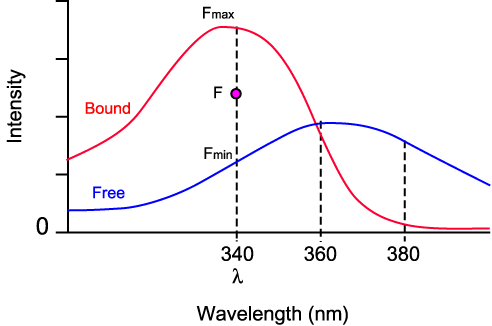
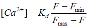
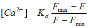
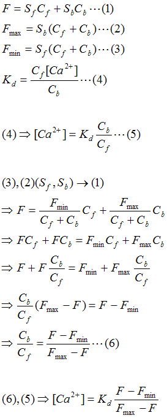

Reference: Grynkiewicz et al, 1985
|
Fura-2
Excitation Spectra  |
 F: Fluorescence Intensity Fmax: Maximum Fluorescence when all dyes are bound. Fmin: Minimum Fluorescence when all dyes are free. Sf: Proportionality Coefficient (Free) Sb: Proportionality Coefficient (Ca2+-bound) Cf: Free Dye Concentration Cb: Ca2+-bound Dye Concentration Kd: Dissociation Constant At wavelength 380 nm,  |
 |